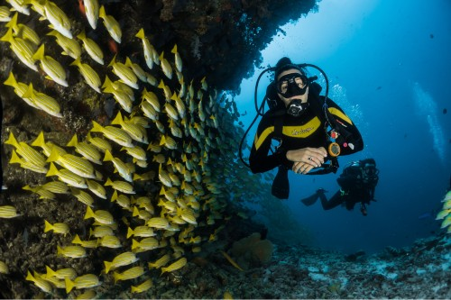
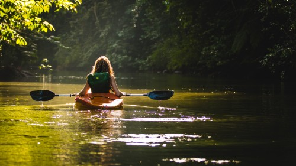

Explore the beauty of Cozumel
Cozumel is home to arguably some of the best beaches in Mexico, and offers travelers a variety of different beachfront adventures. Before you jet off to this Mexican island (only 45-minutes by ferry from Playa del Carmen), you'll want to consider whether your ideal beach vacation includes snorkeling, exploring Mayan ruins, or hours spent lazing on chic sunbeds. The top beaches in Cozumel stand out because they're so much more than attractive stretches of Mexico's coastline. We looked at beach destinations that had fun things to do like trips to nearby Mayan ruins or excellent kayaking and snorkeling. Of course, the best beaches will always deliver an Instagram-worthy view, whether they're surrounded by tropical rainforest or famous for their spectacular sunsets.
Playa Corona

Playa Corona is a well-known dive spot. Though it’s a small stretch of sand, many visitors come here to admire the underwater scenery. When you’ve become completely waterlogged, relax under the shade of one of the many beach huts speckling Playa Corona.
Playa Bonita

For fans of soft white sand and crystal blue waters, Playa Bonita is unlike most beaches that you’ll find on the eastern coast, making it desirable for tourists (and oftentimes considered one of the most romantic beaches in Cozumel). Gentle waves make it a relaxing destination for swimming and kayaking. Another highlight is a small Mayan ruin at this beach for travelers more interested in history than sunbathing.
Playa Chen Rio
With a protected area for swimming and snorkeling that stays relatively shallow, Playa Chen Rio offers a fun experience for both novice as well as advanced ocean swimmers. Large rocks break up the surf, and lush vegetation around the cove make for a picturesque getaway.